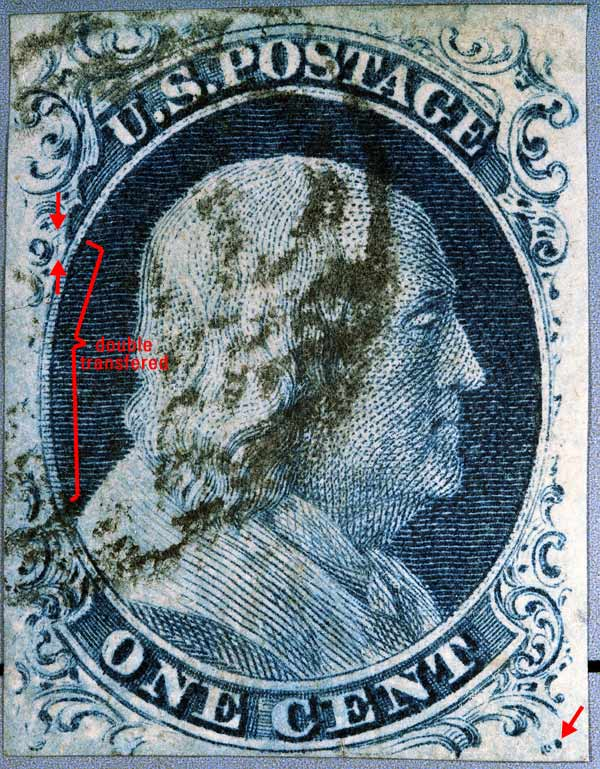
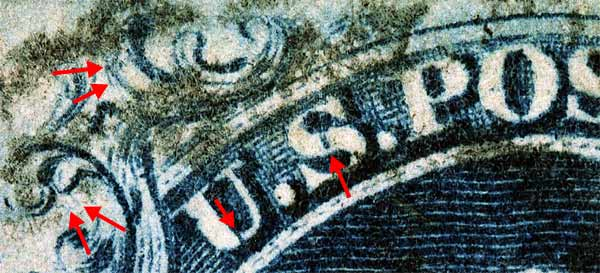
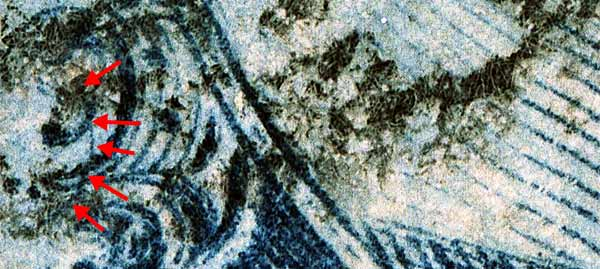
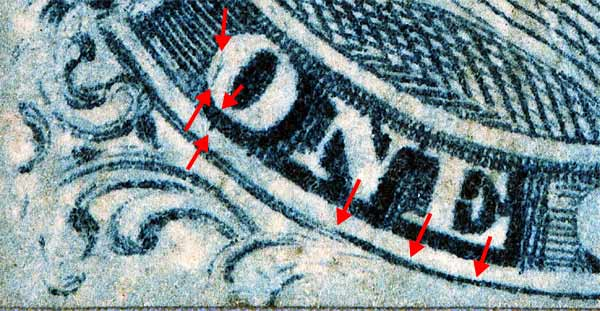

| 1¢ Franklin Issue of 1851-1857, PLATE 1 LATE.
Pos 82L1L, (Scott #9) |
| Scott #9 Blue, Type IV, Relief B Issued both imperforate and perforated. Perforated copies are more scarce. SINGLE RECUT TOPand BOTTOM |
|  |
| Figure 1. (BELOW). Various DOUBLE TRANSFER marks makes this position easy to identify. The cancellation ink unfortunately covers many of the Neinken / Ashbrook indicated marks. See another copy of 82L1L and see if you can spot other DOUBLE TRANSFER marks.
 |
| Figure 2. (BELOW). Reverse C mark which was probably the backside curve of Ornament F-G from the original entry.The cancellation ink unfortunately covers many of the Neinken / Ashbrook indicated marks, but this mark sneaks thru the cancel ink.
 |
| Figure 3. (BELOW). Double transfer marks in the "O" of ONE. Also a detail view of the heavy recut curved bottom line.
 |
| MY STANDARD DISCLAIMER: Thanks for visiting this site. I hope you learn something new as I am really having fun doing this. You, the visitor, have my permission to link to my pages and to share the link paths with others. I only ask in return that you send me an e-mail if I have made a mistake, or have done some other technical blunder that in my rush to put these pages up would cause the visitor confusion. Please also visit my other website at www.slingshotvenus.com. and support the live music arts. While your there, be sure to purchase our music. There are not many philatelic rock stars around and we need all the help we can get. :-) I can be reached at: nerdman@ix.netcom.com |